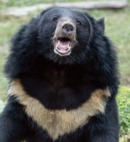
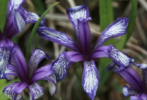
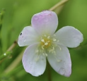

멸종 위기 동물
게시물 1, May 28, 2025

반달가슴곰
낙엽 활엽수가 발달한 산림에 사는 곰과의 포유동물로 가슴에 흰 초승달 무늬가 특징이다. 백두대간을 중심으로 한반도 전역 살았지만 일제강점기 때 해수구제 정책으로 많은 수가 사라졌고 웅담 때문에 밀렵이 끊이지 않아 멸종 직전에 이르렀다.
멸종 위기 동물
게시물 2, May 29, 2025

바다거북
바다거북은 파충류이다. 일반적으로 파충류는 다른 동물군에 비해 종류가 적다. 특히 바다거북, 바다뱀 등과 같이 바다에 사는 파충류는 그 종류가 더욱 적다. 거북은 종류에 따라 육지나 담수에 살기도 하고, 바다에 살기도 한다.
그 외..

수달
+식물도 즐겨보세요


Follow
Some